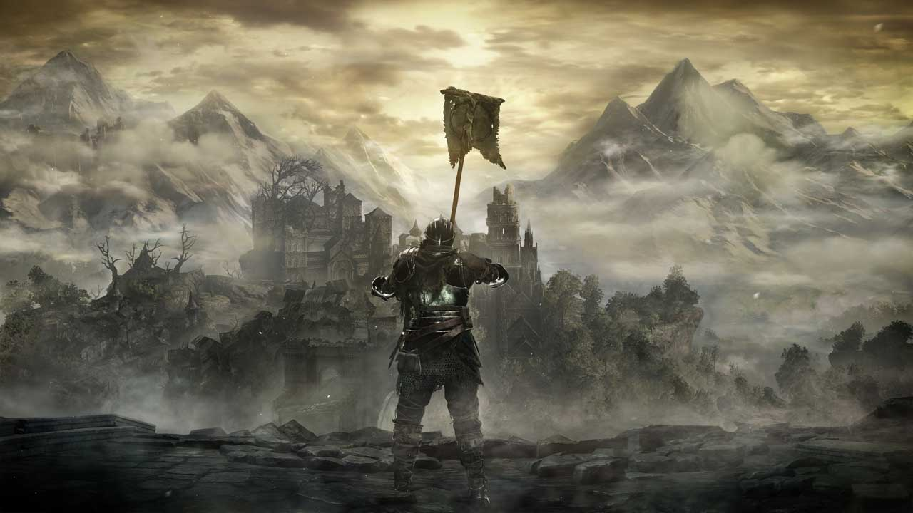

-Back To Index-
-Firelink Shrine-
-Undead Settlement-
-Farron Swamp-
-Back To Index-
-Firelink Shrine-
-Undead Settlement-
-Farron Swamp-
{kind=link}
High Wall of Lothric
Here marks the first technical area of the game. This is where your journey really begins. There are many discernible traits between the High Wall, and Lothric itself. The High Wall is the wall surrounding Lothric Castle and stands between it and the bridge that once lead to The Undead Settlement. Through the downfall of the continuing fire age, the theory is that the bridge that leads Lothric Castle to The Undead Settlement was destroyed to isolate the castle from the people of the settlement below, under the assumption that the people of Lothric Castle would be shielded from the corruption the world was facing. This however, was not the case. There is even evidence of the people of The Undead Settlement, once attempting to break the doors open. The gate doors are bent inwards, showing signs that a battering ram was used on the doors.
The High Wall is surrounded by undead that once appeared to be soldiers, undead Knights of Lothric Castle, as well as the remainings of dead bodies. The two bosses that are introduced in this area are Vordt of the Boreal Valley, and Dancer of the Boreal Valley. Those names raise many questions. If they are from Irithyll, what are they doing near Lothric Castle? Why are they trying to stop you. The most probable theory begins with the first scholar, Pontiff Sulyvahn (another boss in the game). He is responsible for convincing the Twin Princes that the linking of the flame is a pointless method. We don’t know what Pontiffs specific motives are but he knows ours. Evidently he does not want us to link the flame. The community agrees that Dancer and Vordt are there to stop you from beginning and continuing your journey to return the Lords of Cinder to their thrones.
Vordt Of The Boreal Valley
Previously mentioned Vordt of The Boreal Valley is the first boss you fight in the game. Once Vordt became a follower of Pontiff Sulyvahn, he chose to be the very first Outrider Knight. There are only two other Outrider Knights found in the main game. They are much smaller and less powerful, fortifying the theory that Vordt is the first one. The Dutch word for “frost” is “vorst” which may have some correlation to Vordt’s name and the fact that he is a Frost type boss.
Hollowed Soldier
These Hollow Soldiers fight and patrol in large numbers, it makes them almost as intimidating as some of the other enemies found in the High Wall. Some of these soldiers carry Spears, Swords, Daggers, and Crossbows, so evidently they can defeat you in many different ways. Some of them can even heal themselves after taking damage.
Hollowed Knight
These Knights of Lothric are much more dangerous than the soldiers. They are sworn to guard and fight for whoever may hold the throne of Lothric Castle. These Knights do not stop patrolling The High Wall or the castle itself, until they are killed by anyone who threatens what the Knights are sworn to protect. These now Hollow Knights come in variations, much like the Soldiers.
{kind=link}
{kind=link}
{kind=link}
{kind=link}
{kind=link}